繁體中文
English
日本語
简体中文
環境溫溼度
--
°C /
--
%
目前用電量
--
kW
本日碳排放量
--
kg CO₂e

智慧中央監控系統
請選擇您要檢視的子系統，以進入對應樓層的 3D 監控畫面。
能源管理儀表板
電梯監控系統
防盜及求救系統
1F
2F
3F
4F
5F
攝影監視系統
1F
2F
3F
4F
5F
門禁保全系統
1F
2F
3F
4F
5F
影像對講系統
1F
2F
3F
4F
5F
消防火警系統
1F
2F
3F
4F
5F
給排水系統
B3F
停車管理系統
B1F
B2F
B3F
空調控制系統
1F